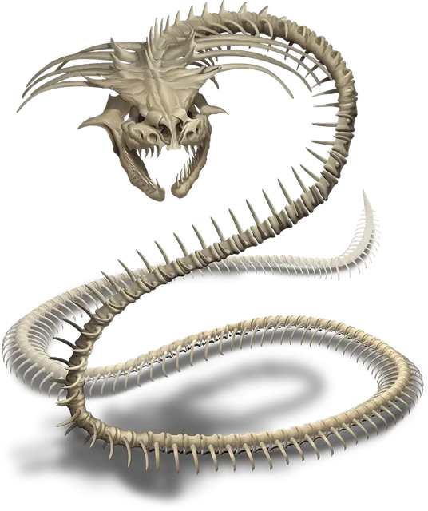

Костяная нага
Bone Naga
Большая Нежить, законно-злая

Класс Доспеха 15 (природный доспех)
Хиты 58 (9к10 + 9)
Скорость 30 футов
| мод | спас | ||
|---|---|---|---|
| СИЛ | 16 | +3 | +3 |
| ЛОВ | 15 | +2 | +2 |
| ТЕЛ | 12 | +1 | +1 |
| мод | спас | ||
|---|---|---|---|
| ИНТ | 15 | +2 | +2 |
| МДР | 15 | +2 | +2 |
| ХАР | 16 | +3 | +3 |
Иммунитет к урону яд
Иммунитет к состояниям паралич, очарование, отравление, истощение
Чувства тёмное зрение 60 футов, пассивное Восприятие 12
Языки Общий
Опасность 4 (1100 опыта)
Бонус мастерства +2
Среда обитания Подземье
Особенности
Языки. - Общий плюс один другой язык.
Использование заклинаний. Нага является заклинателем 5-го уровня (Сл спасброска от заклинания 12, +4 к попаданию атаками заклинаниями), которому для накладывания заклинаний нужны только вербальные компоненты.
Если нага при жизни была охранной нагой [guardian naga], то её базовой характеристикой является Мудрость, и у неё подготовлены следующие заклинания жреца:
• Заговоры (неограниченно): починка [mending], священное пламя [sacred flame], чудотворство [thaumaturgy];
• 1 уровень (4 ячейки): приказ [command], щит веры [shield of faith];
• 2 уровень (3 ячейки): удержание личности [hold person], умиротворение [calm emotions];
• 3 уровень (2 ячейки):проклятие [bestow curse].
Если нага при жизни была духовной нагой [spirit naga], то её базовой характеристикой является Интеллект, и у неё подготовлены следующие заклинания волшебника:
• Заговоры (неограниченно): волшебная рука [mage hand], луч холода [ray of frost], малая иллюзия [minor illusion];
• 1 уровень (4 ячейки): очарование личности [charm person], усыпление [sleep];
• 2 уровень (3 ячейки): обнаружение мыслей [detect thoughts],удержание личности [hold person];
• 3 уровень (2 ячейки):молния [lightning bolt].
Действия
Укус. Рукопашная атака оружием: +5 к попаданию, досягаемость 10 футов, одно существо. Попадание: Колющий урон 10 (2к6 + 3) плюс урон ядом 10 (3к6).
Описание
В ответ на длительную историю вражды между юань-ти и нагами, юань-ти создали некромантский ритуал, способный остановить воскрешение наги, трансформируя живую нагу в подчиняющуюся нежить-скелет. Костяная нага помнит лишь несколько заклинаний, которые знала при жизни.
См. дополнительно статью: "Бестиарий: Наги"